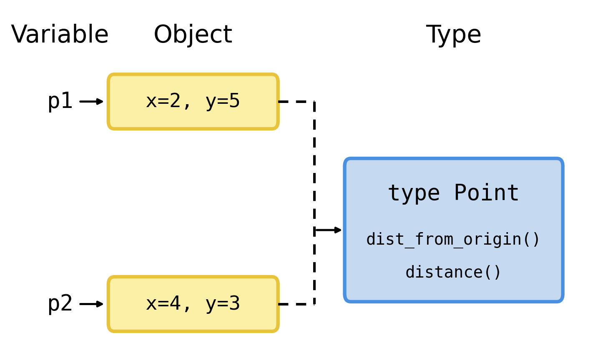

import sandbox_widget
import codelens_widget38 Classes
Do you know what type you are? Python objects do. This chapter is about how they know it, and about how you make a type of your very own.
You have been using objects all along
In Chapter 20 you learned that every value in Python is an object: a piece of data with a lot of relevant functionality packaged along with it. You have been bossing those objects around ever since. Read and run this one more time:
%%sandbox
print("banana".upper())Say it out loud the way we did back then: “Hey string, uppercase yourself!”. The string obliges, and "banana".upper() is substituted for "BANANA".
Now here is a question I have been putting off: where does "banana" keep that upper method? Somewhere in your computer’s memory sits the word banana. Does it also carry around its own private copy of upper, and lower, and strip, and replace, and the forty-odd other string methods? That would be an awful lot of luggage for six letters. And your program may hold thousands of strings.
It does not. The methods live somewhere else, and where they live is the key to this whole chapter.
The type knows what an object can do
Every object has a type, and you can ask an object what type it is. You met the type function back in Section 17.0.0.14:
%%sandbox
fruit = "banana"
print( type(fruit) )Run it. Python tells you that the value of fruit is of type str. You have met a good handful of types by now: int, str, float and bool for single values, and tuple, list and dict for containers.
Figure 38.1 shows the arrangement. On the left are two objects, "Preben" and "Mogens". They are different objects: they hold different data and they sit in different places in memory. But they are both of type str, and so they both point at the same description of what a string can do. The methods upper, split and strip are defined once, in one place, and every string in your program borrows them from there.

That is the deal: the object holds the data, and the type holds the functionality. When you write "banana".upper(), Python looks at the object, sees that it is a str, walks over to str to fetch upper, and then runs it on your particular banana.
Exercise 38-1
Decide what each line prints before you run anything. Then read the code and check.
%%sandbox
print( type(3) )
print( type(3.0) )
print( type("3") )
print( type([3]) )
print( type({3: 'three'}) )Were you right about all five? The last two are the ones that catch people out.
Exercise 38-2
The type decides what an object can do. That means that asking an object to do something its type knows nothing about is an error. Predict what happens here, then run it and read the error message carefully:
%%sandbox
number = 7
print( number.upper() )The error message is worth learning to read. It names the type it was looking in, and the method it could not find there.
Classes define types
So far you have used the types that came with Python. You are about to make one of your own, and the tool for that is called a class.
A class is a description of a type. When you write a class, you define a new type, and the methods you write in the class become available to every object of that type. Python types and your own types work in exactly the same way: str is a class too. Someone sat down and wrote it, just as you are about to sit down and write yours.
Why would you want to? Because objects bundle data together with the functionality that belongs to it. Think back over the programs you have written so far. Have you ever had three or four variables that clearly belonged together, and a couple of functions that only ever made sense when applied to exactly those variables? That is a type waiting to be born.
A point in a plane
Let us make something small enough to hold in your head. Figure 38.2 shows two points in a coordinate system. The point p1 sits at some x1 and y1, and p2 sits at x2 and y2.

You could keep those two points in four variables:
x1 = 2
y1 = 5
x2 = 4
y2 = 3and that works fine. Until you need a third point. And a tenth. And a function that takes a point as an argument, which now has to take two arguments and hope that you pass them in the right order, and which cannot return a point at all, because a function returns one value.
Exercise 38-3
Before you read on, take thirty seconds with pen and paper. If Python let you invent a new type called Point, what data would each point object need to carry, and what would you like to be able to ask a point to do? Write down three things. You will meet two of them later in this chapter.
Writing your first class
Here is the whole thing. Run it:
%%sandbox
class Point:
def __init__(self, x, y):
self.x = x
self.y = yIt seems that nothing happened, but a great deal did. Let us take it apart line by line.
The line class Point: says: from here on I am describing a new type, and its name is Point. Note the colon at the end. You know what a colon at the end of a line means by now: an indented block follows, exactly as after an if or a def (Chapter 16). Everything indented under class Point: belongs to the class.
Inside the block we define a function with def, just as in Chapter 17. A function defined inside a class is called a method — and now you know why methods and functions have felt so similar all along. A method is a function that lives in a class.
The method is called __init__. Those double underscores should ring a bell: you met them in Section 20.0.0.11, where + turned out to call a secret method named __add__. Same idea here. __init__ is a method that you write but that Python calls, on your behalf, every time a new Point is made. Its job is to initialize the new object: to furnish it with the data it should carry. It does not create the object — Python has already done that by the time __init__ runs. It moves the furniture in. That is why it is called the initializer.
NoteNot a “constructor”
You will meet people, and AI assistants, who call __init__ “the constructor”. It is a forgivable slip borrowed from other languages, but it is not what happens in Python. By the time __init__ runs, the object already exists. __init__ initializes it.
And then there is self, which deserves a section of its own.
What is self and why do we need it?
Look again at the two indented lines:
self.x = x
self.y = yThe right-hand sides are easy: x and y are just parameters of the method, holding the values that were passed in. The left-hand sides say: store this in the object, under the name x. And self is the name of the object we are storing it in.
Three things to know about self:
- The first parameter of a method is called
self. This is a convention, not a rule of the language, but it is a convention so universal that breaking it will confuse everyone including you. - Python adds the
selfargument automatically when a method is called. You never pass it yourself. selfpoints at the particular object the method was called on. When you have made a hundred points, the same__init__runs a hundred times, and each timeselfpoints at a different one of them.
That last point is the whole trick. One description of the type; many objects, each with its own data. Exactly the picture in Figure 38.1, only now with points instead of strings.
Making an object
Add a print at the bottom and run it again:
%%sandbox
class Point:
def __init__(self, x, y):
self.x = x
self.y = y
print(Point)Python prints something like <class '__main__.Point'>. Read that as: “this is the class Point, defined in the file you are running”. The class itself is an object too — of course it is, everything is an object — and this is what it looks like when you print it.
Now make an actual point. Replace the last line, then run it:
%%codelens
class Point:
def __init__(self, x, y):
self.x = x
self.y = y
p = Point(4, 3)
print(p)Two things to notice.
First, look at Point(4, 3). It looks exactly like a function call, and it behaves like one: it is an expression, and it reduces to a value. Here is what Python does with it, in order:
- It makes a new, empty object of type
Point. - It calls
__init__with that new object asself,4asx, and3asy. __init__stores the data in the object and returns nothing.- The whole expression
Point(4, 3)is substituted for the new object, which is then assigned top.
Notice that you passed two arguments although __init__ has three parameters. Point 2 is where the third one comes from: Python supplies self.
Second, look at what got printed. Something like:
<__main__.Point object at 0x1032b4a20>The long number will be different on your machine, and different again the next time you run it. It is roughly where the object sits in your computer’s memory. This is Python saying “I have no idea how you want this thing displayed, so here is what I know about it”. We will fix that shortly.
Exercise 38-4
What do you think these two lines print? Decide first, then run.
%%sandbox
class Point:
def __init__(self, x, y):
self.x = x
self.y = y
p = Point(4, 3)
print( type(p) )
print( Point )The two lines print the same thing, and it is worth a moment’s thought why. type(p) asks the object what type it is, and the answer is the class. The class and the type are the same object. That is what “classes define types” means, quite literally.
Getting at the data
The data you stored in the object is available with a dot, just like methods:
%%sandbox
class Point:
def __init__(self, x, y):
self.x = x
self.y = y
p = Point(4, 3)
print(p.x)
print(p.y)Run it and you get 4 and 3. Values stored in an object like this are called attributes. The dot means the same thing it has always meant: go into this object and get me the thing called…. Sometimes what you get is a method you can call, and sometimes it is a value you can use.
Exercise 38-5
Attributes are variables, and variables can be assigned to. Predict what this prints, then run it:
%%sandbox
class Point:
def __init__(self, x, y):
self.x = x
self.y = y
p = Point(4, 3)
p.x = 100
print(p.x, p.y)Exercise 38-6
Now make two points and convince yourself that they really are separate objects with separate data. Predict all four numbers before you run it:
%%sandbox
class Point:
def __init__(self, x, y):
self.x = x
self.y = y
p1 = Point(2, 5)
p2 = Point(4, 3)
p1.x = 100
print(p1.x, p1.y)
print(p2.x, p2.y)This is Figure 38.1 again, with Point in the blue box and your two points in the yellow ones.
Exercise 38-7
What do you think happens here? Make up your mind, then try it:
%%sandbox
class Point:
def __init__(self, x, y):
self.x = x
self.y = y
p = Point(4, 3)
print(p.z)Read the error message. It tells you which type it was looking at and which attribute it could not find. You will see this one a lot, usually because you misspelled something.
How should it look as a string?
Printing a point gave us that unfriendly <__main__.Point object at ...>. Let us do something about it, and in doing so meet another double-underscore method.
When you write print(p), Python needs to turn your object into a string, and it asks the object to do it. It does that by calling the object’s __str__ method. Your Point class does not have one, so Python falls back on the unhelpful default. Give it one:
%%sandbox
class Point:
def __init__(self, x, y):
self.x = x
self.y = y
def __str__(self):
return "({}, {})".format(self.x, self.y)
p = Point(4, 3)
print(p)Run it. Now print(p) gives you (4, 3).
Look at the method. It takes only self — it needs no other information, because everything it needs is stored in the object. It reaches into the object for self.x and self.y, formats them with the format method you learned in Chapter 20, and returns the resulting string. It does not print anything. print does the printing; __str__ only supplies the string.
Exercise 38-8
Delete the return from __str__ so the method body is just the "({}, {})".format(self.x, self.y) line without return, and run the program again. What is printed? Why? If you have forgotten, Section 17.0.0.25 is where a function without a return was first discussed.
Exercise 38-9
Change __str__ so that a point prints as Point at x=4, y=3 instead. Predict what your program will print, then run it.
A method of your own
Now for a method that actually computes something. How far is a point from origin? That is the Pythagorean theorem you used in Section 13.0.0.7: the distance is \(\sqrt{x^2 + y^2}\), and taking a square root is exponentiating to \(0.5\).
%%sandbox
class Point:
def __init__(self, x, y):
self.x = x
self.y = y
def dist_from_origin(self):
return (self.x ** 2 + self.y ** 2) ** 0.5
p = Point(4, 3)
dist = p.dist_from_origin()
print(dist)Read it and run it. You should get 5.0, which is the nicest right-angled triangle there is.
Now look at what you just did. dist_from_origin is a function that only makes sense for points, so you put it where points can find it: in the class. Every point you ever make from now on can do this. That is what I meant by bundling data together with the functionality that belongs to it, and it is the whole reason classes exist.
Figure 38.3 is the same picture as before, now with your own type in the blue box.

Exercise 38-10
Predict what this prints, then run it:
%%sandbox
class Point:
def __init__(self, x, y):
self.x = x
self.y = y
def dist_from_origin(self):
return (self.x ** 2 + self.y ** 2) ** 0.5
p1 = Point(3, 4)
p2 = Point(6, 8)
print(p1.dist_from_origin())
print(p2.dist_from_origin())
print(p1.dist_from_origin() + p2.dist_from_origin())Do the substitutions in your head first. p1.dist_from_origin() is an expression, and like every expression it reduces to a value.
self and method calls
Here is something that will make self click, if it has not already.
The self variable points at the object that the method was called on. So if you have made a point:
p = Point(4, 3)then this:
p.dist_from_origin()is actually the same as this:
Point.dist_from_origin(p)Try both. They give the same answer, because they are the same call. The dot notation is a convenience: p.dist_from_origin() means “find the type of p, get dist_from_origin from it, and call it with p as the first argument”. Python does the shuffling so you do not have to.
Nobody writes Point.dist_from_origin(p) in real code. But knowing that it means the same thing is what stops self from feeling like magic. It is just the first argument.
TipAsk the machine, not your memory
If you are ever unsure whether a method is being called on the object you think it is, add a print(self.x, self.y) as the first line of the method. Methods are ordinary functions and you can debug them in ordinary ways.
Distance to another point
Distance from origin is a special case. What you usually want is the distance between two points. The Pythagorean theorem still applies: the two legs of the triangle are the difference in x and the difference in y.
Exercise 38-11
Fill in the three missing lines. The hint is \(c = \sqrt{a^2 + b^2}\), which in Python is c = (a**2 + b**2)**0.5.
class Point:
def __init__(self, x, y):
self.x = x
self.y = y
def distance(self, other):
?????
?????
return ?????
p1 = Point(4, 2)
p2 = Point(3, 7)
dist = p1.distance(p2)
print(dist)Two hints and then you are on your own. First, distance has two parameters: self and other. Python fills in self with p1, and you supply other yourself — it is p2. Second, other is a Point, so you can reach into it with a dot exactly as you reach into self.
Take your time with this one. Work out on paper what the answer should be before you run anything, so you know whether to believe the number that comes out.
Exercise 38-12
Once your distance method works, open the assistant in the browser, show it your class, and ask it to write a distance method for a Point class. Do not paste its answer into your editor. Compare it with yours instead. Is it doing the same arithmetic? Did it use different variable names, or fewer lines? Does it handle anything you did not think of? Then run your version on Point(0, 0) and Point(3, 4) and check the answer against what you know the answer must be.
Remember the rule: the assistant predicts, the machine proves.
Here is one solution:
%%sandbox
class Point:
def __init__(self, x, y):
self.x = x
self.y = y
def distance(self, other):
a = self.x - other.x
b = self.y - other.y
return (a ** 2 + b ** 2) ** 0.5
p1 = Point(4, 2)
p2 = Point(3, 7)
dist = p1.distance(p2)
print(dist)Exercise 38-13
Should p1.distance(p2) and p2.distance(p1) give the same answer? Decide what you believe, argue to yourself why, and then check it with the machine.
Peeking behind the curtain, again
You have now written two methods with double underscores around their names, and both of them were called by Python rather than by you. There are many more, and they are how Python lets your own types behave like built-in ones.
Remember __add__ from Section 20.0.0.11? The + operator does not know how to add anything. It asks the object on its left to add the object on its right, by calling its __add__ method. Which means that if you give your class an __add__ method, + works on your objects.
%%sandbox
class Point:
def __init__(self, x, y):
self.x = x
self.y = y
def __str__(self):
return "({}, {})".format(self.x, self.y)
def __add__(self, other):
new_x = self.x + other.x
new_y = self.y + other.y
return Point(new_x, new_y)
p1 = Point(4, 2)
p2 = Point(3, 7)
new_p = p1 + p2
print(new_p)Predict what is printed, then run it. Look carefully at what __add__ returns: not a number, but Point(new_x, new_y) — a brand new point. A class can make objects of its own type inside its own methods. That is not a special feature; it is just an expression that reduces to a value, like everything else.
Exercise 38-14
What do you think p1 + p2 + p1 reduces to? Do the substitution and reduction steps one at a time. Then run it.
Exercise 38-15
Comparison works the same way. The == operator calls a method named __eq__. Predict what this prints before you run it:
%%sandbox
class Point:
def __init__(self, x, y):
self.x = x
self.y = y
def __eq__(self, other):
return self.x == other.x and self.y == other.y
p1 = Point(4, 2)
p2 = Point(3, 7)
print(p1 == p2)Then change p2 to Point(4, 2) and predict again. Two points at the same position: are they the same object? Are they equal? Those are two different questions, and __eq__ is you answering the second one.
Exercise 38-16
Delete the __eq__ method entirely, set both points to Point(4, 2), and run it again. What does == mean when you have not said what it should mean? Python’s default is to ask whether the two names refer to the very same object, which two separately created points never are.
Making your own type feel like a real one
One more, because it is so satisfying. A gene has a sequence, and asking how long a gene is should be an ordinary thing to do. The len function calls a method named __len__:
%%sandbox
class Gene:
def __init__(self, name, sequence):
self.name = name
self.sequence = sequence
def __str__(self):
return "{} ({} bases)".format(self.name, len(self.sequence))
def __len__(self):
return len(self.sequence)
gene = Gene('BRCA1', 'ATGGATTTATCTGCTCTTCGCGTT')
print(gene)
print(len(gene))Predict both lines, then run it. Notice that __len__ does not count anything itself. It hands the question on to the string it is holding, because a string already knows how long it is. Most of the methods you write will be like this: short, and mostly delegating to objects that already know how to do the work.
Exercise 38-17
Give Gene a method called gc_content that returns the fraction of the sequence that is G or C. You already know everything you need: count is a string method, and len you have just used twice. Test it on 'GGCC', where you know the answer must be 1.0, and on 'ATAT', where you know it must be 0.0. If your method passes both of those, try it on the real sequence above.
Exercise 38-18
Show the assistant your Gene class and ask it: “what does len(gene) do here?” Then ask it: “what would gene[0] do?” One of those two answers is going to be wrong, or at least is going to describe something your class cannot do. Find out which by running both. Write down in your logbook what it claimed and what actually happened.
General exercises
Exercise 38-19
Look at the code below and decide what is printed. Then run it. If you were wrong, work out why.
%%sandbox
class Dog:
def __init__(self, name):
self.name = name
def speak(self):
return "{} says woof".format(self.name)
d1 = Dog('Mogens')
d2 = Dog('Preben')
print(d1.speak())
print(d2.speak())
print(Dog.speak(d1))Exercise 38-20
ImportantSpot the bug
The code below is deliberately broken. It is not a typo left in by accident; it is here for you to find.
%%sandbox
class Dog:
def __init__(name):
self.name = name
d = Dog('Henning')
print(d.name)Run it, read the error message, and fix it. The error message is not especially friendly, so read it twice: it is counting arguments, and it is counting one more than you passed.
Once you have found the bug, ask the assistant to explain why the message counts one argument more than you passed. The answer is about self, and it is the most useful single thing to understand about methods, so do not accept an explanation you cannot repeat in your own words.
Exercise 38-21
ImportantSpot the bug
This one is deliberately broken too, but in a sneakier way: Python complains about a line that is perfectly fine.
%%sandbox
class Point:
def __init__(self, x, y):
x = x
y = y
def dist_from_origin(self):
return (self.x ** 2 + self.y ** 2) ** 0.5
p = Point(3, 4)
print(p.dist_from_origin())Run it and read the error. Python points at dist_from_origin and says the point has no attribute x. But dist_from_origin is written correctly. The mistake is two lines earlier, in __init__, and __init__ ran without complaining at all. Where is the mistake, and why did Python only notice later? This gap between where the bug is and where Python trips over it is the single most common reason a beginner stares at the wrong line for twenty minutes.
Ask the assistant which line is at fault, and ask it before you tell it anything about your own verdict. Python’s complaint points at a line that is perfectly fine, so an assistant that trusts the traceback will point at the wrong line too. Decide for yourself first, then run your fix and see which of you was right.
Exercise 38-22
Write a class called Rectangle that is initialized with a width and a height, and that has a method area and a method perimeter. Then write a __str__ method so that printing a rectangle shows something like Rectangle 3 x 4. Predict what each of your methods will return for Rectangle(3, 4) before you run anything.
Exercise 38-23
Add a method is_square to your Rectangle that returns True or False. Do not write an if statement. If you are tempted to, reread Section 13.0.0.10: a comparison is already a boolean.
Exercise 38-24
Paste the Point class with __add__ into the assistant and ask it to explain, line by line, what happens when Python evaluates p1 + p2. Then check its story against what you know: does it get the order of the substitutions right? Does it correctly say what __add__ returns? Does it call __init__ a constructor? Score it, and put the score in your logbook.
What you learned
You now know that every object has a type; that the type holds the methods and the object holds the data; that a class is how a type is described; that __init__ initializes a new object rather than constructing it; that self is simply the first argument, filled in for you; and that the double-underscore methods are how your own types get to use Python’s ordinary operators.
That is the last big idea in the language. Everything from here on is practice, and using other people’s classes — which you can now read, because you know what they are.
NoteLogbook
This week, record one thing the assistant told you about classes that turned out to be right, and one thing that turned out to be wrong or imprecise. Note how you found out. “I ran it” is the answer we are looking for.